Full paper in compressed Postscript *.ps.gz
The paper describes the algorithms for investigation of stability of mechanical systems. These algorithms are implemented with the aid of the computer algebra system (CAS) in the software package "STABILITY". Package investigates stability and stabilization of mechanical systems in both pure symbolic and numerical-symbolic forms [1].
Let's consider the stability task for trivial solution of matrix
differential equation
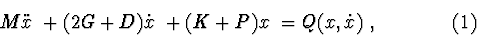
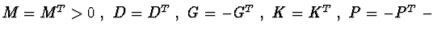
0\ ,\ D=D^{T}\ ,\ G=-G^{T}\ ,\ K=K^{T}\ , \ P=-P^{T}\ - $">are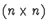
matrices of dissipative, gyroscopic, potential and nonconservative (circulatory) forces;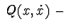
is single-column matrix of nonlinear forces,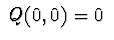
.This presentation is possible for differential equations of perturbed movement in the neighborhood of stationary motion or invariant set of stationary motions. Algorithm to reduce equations to form (1) and algorithm to classify nonlinear forces
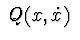
suitable for implementation with CAS are described in [2]. There are three specific groups of the tasks.Investigation of stability in the first approximation. The question of asymptotical stability or instability can be investigated by studying of the first approximation equations ( when in eq. (1)
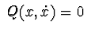
) , if we'd use classic Lyapunov's theorems.
Step 1. Construct characteristic equation of the system (1):
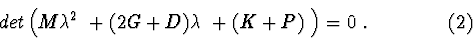
Step 2. Analyze the structure of the polynomial (2).
Step 2.1. If polynomial (2) contains all powers of
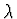
, then we construct the Hurwitz matrix and write out all Routh-Hurwitz conditions and their analogies. It gives us necessary and sufficient conditions that all roots of (2) have negative real parts. If these conditions are met, then the motion is asymptotically stable, independently from nonlinearities . These condition comprise the system of algebraic inequalities of system parameters (matrix elements of equation (1), amplification coefficients in linear controlling forces, etc). Inequalities are written out in either symbolic or numerical-symbolic form. A description of some algorithms for solving the systems of algebraic inequalities is given in [2]. The software implementation of these algorithms allows us to solve following tasks:
a). Finding the domains, which satisfy the inequalities
of one-parameter polynomials with numerical coefficients
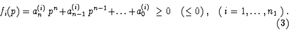
b). Search and graphical constructing of two-dimensional
domains corresponding to a system of algebraic inequalities
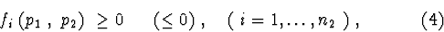
where
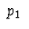
is the parameter reckoned on the abscissa axis, and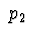
is the parameter reckoned on the axis of ordinates. The boundaries of variation of the parameters and for constructing 2D - domains are determined as the solutions of problem (a).Step 2.2. If in polynomial (2) some powers of are absent, we must conclude that the system is structurally unstable.
Step 2.2.1. Let in polynomial (2) all coefficients be
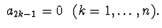
This is always true if in linear part of the system are present (i) positionary forces (potential or non-conservative) or (ii) together with potential forces are present gyroscopic ones. Stability of such a system is possible only in a critical case when all roots of characteristic polynomial are imaginary or(and) zero. Let's substitute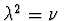
in equation (2). For resulting equation of power n let's write out the conditions when all roots of the polynomial are negative (different) real numbers [3]. This way we get the stability conditions of linear system and necessary conditions of stability of nonlinear system (1).Direct calculation of characteristic equation (2) requires us to calculate large determinants. Thus it's preferable to use some methods of decomposition. Let's suppose that lagrangian
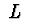
of the system allows presentation in the form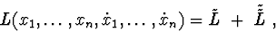
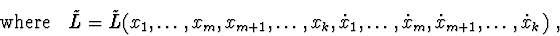
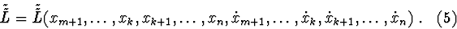
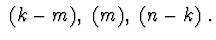
Indeed, considering (5), characteristic matrix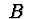
of the system has blocked structure: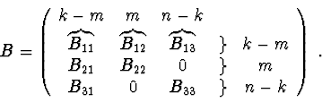
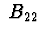
and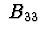
are nondegenerate, then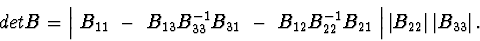
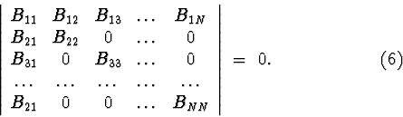
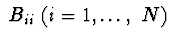
are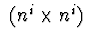
matrices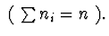
For example, this is the structure of characteristic polynomial for differential equations, describing a motion of system of connected bodies in potential field. If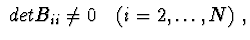
then (6) can be written out in the form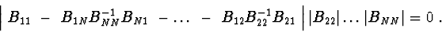
Investigation of stability by second Lyapunov's method. Sufficient conditions of stability, asymptotic stability or instability can be obtained by using theorems of second Lyapunov's method.
In critical cases , only the Lyapunov's second method is used. But then there arises the problem of the proximity of sufficient stability conditions to necessary conditions, i.e. of a "good" choice of the Lyapunov function . As investigations show, in critical cases sufficiently soft stability conditions are obtained when the first integral of the differential equations of motion is taken as the Lyapunov function.
Definition. The relation
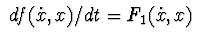
is said to be the differential consequence of equations (1) if it holds for all solutions of the system.In the theorems of the Lyapunov's second method, we shall use differential consequences of equations (1). One of the algorithms for constructing differential consequences is described in [1] and involves the following procedure : we multiply (1) on the left by matrices of the form
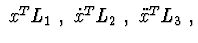
and transform the final expressions by selecting the symmetric parts. The matrices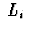
are equal to those of the initial equation or their combinations.Example 1. Let
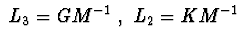
, and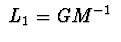
. After selecting the full derivative, we obtain three consequences. We combine them into one bunch :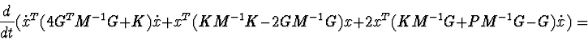
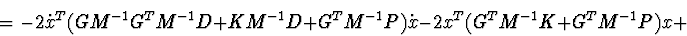
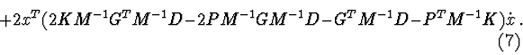
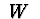
we denote the form in (7) on the right. If in (7) the form under the sign of derivative has the fixed sign and the form has the fixed sign with an opposite sign, in accordance with Lyapunov's theorem the trivial solution of the system is asymptotically stable irrespective of nonlinear forces. If the form in (7) is of constant signs (the sign opposite to that of the form on the left), and the set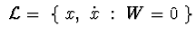
does not contain the full trajectories except for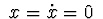
, then the trivial solution of the linear system (1) is asymptotically stable.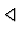
Let's define the function
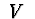
: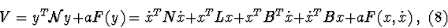
here
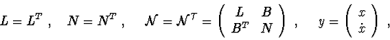
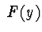
- function of power bigger than two.
Let's calculate derivative of function (8) for equation (1):
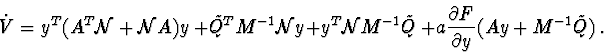
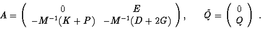
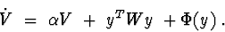
Variant 1. is given definitively positive (negative) matrix. From classical theorems it is known that if at least one of characteristic equation (2) roots has positive real part, for equation (9) there always exist such 0 \ $"> and that isn't sign-definite with sign, opposite to sign of Vice versa, if for equation (9) with 0\ $"> are found 0 \ $"> and and is not definitively negative, then trivial solution of equation (1) is not stable and some roots of eq. (2) have positive real part.
Variant 2. is given definitively negative (positive) matrix. It is known that if all roots of characteristic equation (2) of system (1) have negative real parts, then in (9) there is only one solution for . In these conditions obtained matrix is definitively positive (negative). Vice versa, if with given 0)\ $"> it's found solution of equation (9) and 0\ (<0)\ $">, then zero solution of equation (1) is asymptotically stable and all of equation (2) have negative real parts.
If roots of equation (2) are such that and some of them have positive real part, then equation (9) have single solution and is not definitively positive (negative). Zero solution of system (1) is unstable.
Variant 3. Then equation (9) is equivalent to equation [4] :
Let's write out equation (10) in the form :
Let Then matrix is a solution of over-defined system :
From first equation it follows that are eigenvalues of matrix Second equation always have set of nontrivial solutions. From second and third equations if follows the condition when system (1) is critical. Then third equation (12) has nontrivial solution. The solution of system (12) can be used as Lyapunov function because if satisfies system (12) then
Example 2. Consider a system with two degrees of freedom :
System (12) has the form :
Solution 1. Let
When
system (13)
allows the solution :
Consequently (8) has the form :
Solution 2. Let Then from system (13) we obtain : , , ( in the system are present dissipative, gyroscopic, potential and nonconservative positional forces), Lyapunov function has the form . For eqs. (13) When 0 \ $">and trivial solution is asymptotically stable with respect to When trivial solution is unstable.
Variant 4. Then we obtain two groups of conditions when equation (1) has first integral of form (8) :
a)
b)
Equations of group (b) are used to build
if it exists or
to find such that eq. (8) is an integral.
Function
must fulfill the conditions:
System (a) (14)-(16) always has trivial solution . It is a system of uniform linear equations and can have (i) only trivial solution or (ii) set of solutions. If there exists nontrivial solution then , ( where are matrices commutative with ) are solutions too. Existence conditions for nontrivial solution give us limitations on matrices of original system.
Example 3. Let
( system with
potential and gyroscopic forces).
Solution
determines first integral
(i) equation are matrices ) always has symmetric nontrivial solution; skewed-symmetric solution exists if matrix has multiple eigenvalues with corresponding prime elementary divisors and/or different Jordan blocks;
(ii) equation has nontrivial solution if some of roots of characteristic polynomial of matrix are equal to zero and/or is even function.
Let's discuss obvious variants for system (a) (14)-(16).
Variants 4.1.
The solution of would be
nontrivial if characteristic polynomial of matrix
must be even or
;
characteristic polynomial of matrix
must have multiple
roots ( if
).
Consequence of eqs. (14)-(16) is the equation:
are equal to zero; where are eigenvalues of matrix , are eigenvalues of matrix The number of solutions is , where is a power of maximal common denominator and of characteristic polynomials of these matrices. Let's build equations and find existence conditions for equal to zero. If the equation (18) has a solution then also exist a solution , where matrix is commutative with , is commutative with
Let's select symmetrical and skewed-symmetrical parts of solution and substitute them to equations (14) и (16). Then we obtain conditions on system matrices.
Example 4.
4.1. Let (system with gyroscopic forces). System (14)-(16) has solution . Equation (1) has first integral
4.2. Let Then matrices are identical. The task is reduced to calculation of matrices commutative with Also, Note that if does not have multiple eigenvalues then
Variant 4.1.1. Let Then from eq. (14) follows This solution is possible if above-mentioned conditions are true: characteristic polynomial of matrix must be even or ; characteristic polynomial of matrix must have multiple roots.
Example 5.
5.1. Let ( system with gyroscopic and potential forces ). System (14)-(16) has solution That gives first integral of the equation (1)
5.2. Let Solution with determines first integral of equation (1):
Variant 4.2. Let . Then it remains a system of two
equations :
Example 6.
6.1. Let ( system with potential and gyroscopic forces ). Then in eq. (18) , characteristic polynomials of matrices are identical. There exist a solution that satisfies eqs. (14) and (16). The system allows a first integral From theorems of Lyapunov's second method it follows that if 0\ $">then trivial solution of linear system (1) is stable with respect to variables . If matrix K is not definitely positive, we generate a bunch of forms and . Conditions of sign-definitiveness of this band give sufficient conditions of stability for the critical system in question.
6.2. Let
( system with dissipative and gyroscopic forces).
System (19) has solution
where
6.3. Let
where
(system with dissipative, gyroscopic and potential forces) and condition
(20) is met. Linear equation (1) has first integral
Other variants of solutions of systems (a) and (b) are discussed in [2]. Integral of the linear system can be used as Lyapunov function for nonlinear system too.
The calculated first integrals (or their bunches) can be used to construct Lyapunov functions in proving the stability of the trivial solution for the system (1) if Sylvester's inequalities of sing-definiteness of the quadratic part of the integral (8) with respect to all variables of the problem are satisfied.
Systems with decomposition.
Let system (1) be separable to primary and secondary subsystems:
For example, if then from a differential consequence
Theorem . If 0\ , \ D_{22}\geq 0\ , \ D_{12}=0\ , \ K>0\ $">and set does not contain full non-zero trajectory, then zero solution of a system (21) (P=0) is asymptotically stable with respect to with any non-linear gyroscopic and potential forces.
If then conditions of non-existence of full trajectory
on a set
lead to the statement that a system
As it can be seen from presented theorems, studying of a system stability is reduced to searching of the conditions of sign-definitiveness, sign-constantness and equality to zero for matrices. Note that the task of sign-constantness for matrices cannot be solved on a computer without symbolic calculations. This is why existing numerical packages for stability investigation can work only with rough systems. This is also true for application of N.N. Krasovsky and other theorems based on Lyapunov functions with constant sign derivatives, where we must solve a question about absence of full trajectories of the system on some manifold.
Let's present one of possible algorithms for solution of this task.
1). Choosing a Lyapunov function and calculation by equations of disturbed motion (1).
Choosing a differential consequence .
2). Checking sign-constantness of a function ( if then a group of values when will define a manifold we seek for).
3). If a manifold represents some surface
then matrix condition:
Note :
a). if during solution of specific tasks a sign-constant function can be factorized to then instead of function (which determines a manifold equation) we must use all independent situations and investigate a question about non-existence of full trajectories for each of them.
b). if isn't a function of all variables in the task, like
где then we can use as the manifold for investigation.
This algorithm is implemented in programming language of "Mathematica" system [6].
An example of using the "STABILITY" package.
We conduct parametric analysis of asymptotic stability
conditions of the equilibrium position of a satellite with controlled
gravitational stabilizer on circular orbit [7] (not considering elasticity of
the rod and without a gyrowheel in a satellite).
Linear equations of motion are subdivided to two subsystems.
In pitch angle (
) they have form
If
, then potential forces influence the system.
They are determined by forces of gravitational attraction and by the motion
along the orbit. Such a system cannot be asymptotically stable.
Indeed, the differential equations allow for the integral of energy
(example 6.1) :
The requirements of definite positiveness of this quadratic form give conditions for secular stability of the system.
Let's consider following control actions at the attachment point:
Let parameters of the system be : m ; m ;
rad/s. ;
With these values, domain where parameters
could be chosen is
presented on figure 1.
Figure 1.
This domain is found by program that plots 2D solutions of numerical-symbolic algebraic inequalities (in this case Routh-Hurwitz conditions).
It is known that the problem about damping of transient process in the system
is connected with evaluation of the degree of stability (i.e. with the
evaluation of a disposition of the roots of characteristic equation
in left-hand half-plane).
Also there is an important task of choosing the parameters of the system
in question, so its degree of stability will be larger or equal than
a given value
.
Let's study this question for the system (22).
For the characteristic equation
( where
0\ -\ $"> is the degree of stability (offset from
imaginary axis)) with the help of package "Stability" we obtained
Routh-Hurwitz conditions and made parametric analysis of these conditions.
The analysis showed, that the domain for choosing parameters
exists only when
.
For example, when
and the output of the program
will be the solution (domain) :
Figure 2.
On this picture it can be seen that asymptotical stability for given degree of stability could be reached by adding an accelerating dissipative force to the system, because
1. Banshchikov A.V., Bourlakova L.A. Information and Research System "Stability". //Informations RAS. The theory and control systems. (Izvestia RAN. Teoria i sistemi upravlenia.) (in Russian).
2. Banshchikov A.V., Bourlakova L.A. On algorithms of symbolic computation
at the research of the stability. // Programming. (Programirovanie.)
 (in Russian).
(in Russian).
3. Meierov M.V. Criterion of an aperiodicity of regulation. // Izvestia AN SSSR. Otdelenie tehnicheskix nauk. 1945. (in Russian). (Bulletin DE L'ACADÉMIE DES SCIENSES DE L'URSS. Classe des sciences techniques. )
4. Lankaster P. Theory of matrices. Academic Press. New York - London, 1969.
5. Potapenko E.M. Robust stability of controlled dynamical systems. // Izvestia RAN. Mehanika tverdogo tela. (in Russian).
6. Wolfram S. Mathematica: A System for Doing Mathematics by Computer. Addison-Wesley Publ.Co. 1988.
7. Potapenko E.M. Dynamics of a spacecraft with line active control by a
gravitational stabilizer. // Space researches. (Kosmicheskie issledovania.)
(in Russian).